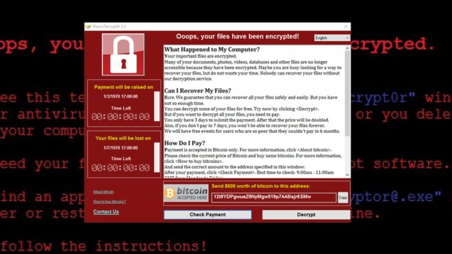

The Ransomware
The genesis and nature of attack that ransomware is
Ransomware is a type of malware that prevents or limits users from accessing their system, either by locking the system's screen or by locking the users' files unless a ransom is paid. More modern ransomware families, collectively categorized as crypto-ransomware, encrypt certain file types on infected systems and forces users to pay the ransom through certain online payment methods to get a decrypt key.
Ransomware is a type of malware that prevents or limits users from accessing their system, either by locking the system's screen or by locking the users' files unless a ransom is paid. It does not seeks not to steal data from a computer system, but rather, sets out to block users from accessing information stored in their systems. On 13th May 2017 every major news outlet in the western world was reporting about the ransomware attack. These attacks were most common in healthcare-related industries, but significant impact was also noted in the financial services, banking and insurance industries. With the BBC reporting diversion of ambulances and loss of access to vital medical data in the UK.
Security researchers have flagged a possible link between North Korea and the massive cyberattack that hit at least 150 countries around the world. Experts say it's still far too early to say whether North Korea was behind the outbreak of ransomware attacks that has affected hundreds of thousands of computers since Friday. But the secretive regime has been linked to other major hacking cases in the past.

The technical aspects of the ransomware
How it could get onto one's computer
Ransomware could be unintentionally or unknowingly downloaded when visiting malicious or infected/compromised websites. It can also get into a system through other malware inserted onto a single user’s computer or, more commonly, downloaded by an unwitting user opening an attachment to spam email. Each one of these routes of attack relies on lack of discipline by curious computer users and highlights the need for organizations to educate employees to understand the need to exercise care in visiting websites and opening suspicious email attachments, or avoiding anything that just does not seem right. The most challenging beat of this ransomware is that once it could get onto a network it could then move from computer to computer so long to can gain accessThe computers it could attact
The ransomware affected mostly windows computers with windows xp being the most hit and followed by windows 7 exploiting the security vulnarability there in. Microsft claimed to have fixed that vulnarability and that thiose computers that were hit did not simply fix security updates. For XP, microsoft nologer supports and therefore this leaves XP more vulnarabile this kind of attack.
There are generally two types of ransomware:
Crypto ransomware is as simple as weaponizing strong encryption against victims to deny them access to those files. Once the ransomware infiltrates the victim's device, the malware silently identifies and encrypts valuable files. Only after successfully accessing to target files has been restricted does the ransomware ask the user for a fee to access their files. Without the decryption key held by the attackers, or in some cases, a vendor decryption solution, the user loses access to the encrypted files. Crypto ransomware often includes a time limit. Some variants of crypto ransomware even provide users with a site to purchase Bitcoins and articles explaining the currency.
This is also known as computer locker. This ransomware doesn't encrypt the files of the victim but instead it denies the access to the device. This locks the device's user interface and then demands the victim for the ransom. This ransomware will leave the victim with very few capabilities such as allowing the victim just to communicate with the attacker and to pay the ransom.
How Ransomware could Infect Critical parts of the Computers
What makes this particular ransomware different from other police ransomware is that it rides on patched malware to infect systems. Patched malware is any legitimate file that has been modified (via addition or injection) with malicious code. Modifying a legitimate file can be advantageous to cybercriminals as the rate of execution of malicious code will depend on the infected file’s frequency of use. This ransomware is also notable for infecting user32.DLL, a known critical file. Infecting a critical file can be considered an evasion technique as it can help prevent detection by behavioral monitoring tools due to whitelisting. Additionally, cleaning critical files such as user32.DLL requires extra care as one misstep can crash a system, which could be seen as a possible obstacle for cleaning tools.
TrendMicro, an IT security company, has published an excellent history of the evolution of this threat as it migrated from Russia to a matter of global concern.
- Attackers research targets extensively to find an opening.
Much like marketers researching a target client, ransomware companies take time to crawl employees’ public digital presence in order to send personalized emails that appear to come from a family member, friend or business associate. That false connection tricks the unsuspecting employee into downloading the ransomware.
- Some ransomware includes friendly tech support.
Many ransomware victims are understandably unsure how to proceed when their data is encrypted, particularly when it comes to steps such as obtaining the Bitcoin the attackers demand as payment. In an ironic twist, some programs are more than happy to offer tech support via “helpful” pop-up messages. “It's almost interesting the sort of the language that they [use to] talk about it, as though this program that is the actual ransomware application is there to help you. ‘Let's help you get your files back. Here are the steps you need to take,’” McChord says. Other software takes a more sinister approach. One program Datto investigated (pictured above) used the clown character from the Saw film franchise and threatened to delete a file for every hour that the ransom went unpaid.
- Ransomware won’t attack you right away.
Once the nefarious application is downloaded, it often lurks in the background for a few days so that victims forget they downloaded it. “The fact that the ransomware lies in wait for a while is not that dissimilar to a drip campaign in marketing," McChord says. "You'll sign up for something and then it might be a while before you actually start getting those emails.”
other examples like this attack
Ransomware is considered "scareware" as it forces users to pay a fee (or ransom) by scaring or intimidating them. In this sense, there other examples of such attack which include:
- FAKEAV malware it is similar to FAKEAV malware, but instead of capturing the infected system or encrypting files, FAKEAV shows fake antimalware scanning results to coax users into purchasing bogus antimalware software.
- LOCKY Discovered in February 2016, Locky was notable for its distribution methods, first seen arriving as a macro in a Word document, and then spotted being spread via Adobe Flash and Windows Kernel Exploits. One of the most actively-updated ransomware families, Locky ransomware is known for deleting shadow copies of files to make local backups useless, and is notorious for being used in multiple high-profile attacks on healthcare facilities.
- PETYA First seen in March 2016, PETYA overwrites the affected system's master boot record (MBR), and is known to be delivered through legitimate cloud storage services such as Dropbox.
- CERBER When it was first seen in early March 2016, CERBER was notable for having a ‘voice’ feature that reads out the ransom message. CERBER was also found to have a customizable configuration file that allows distributors to modify its components—a feature common for malware that's being sold in underground markets. CERBER is also notorious for being used in an attack that potentially exposed millions of Microsoft Office 365 users to the infection.
- SAMSAM Discovered in March 2016, SAMSAM is installed after the attackers exploit vulnerabilities on unpatched servers—instead of the usual malicious URLs and spam emails—and uses these to compromise other machines.
- JIGSAW The first JIGSAW variant seen in April 2016 mixed effective scare tactics with an innovative routine. Featuring imagery from the Saw movie franchise, Jigsaw's ransom note features a countdown timer to pressure its victims into paying—with a promise to increase the ransom amount while deleting portions of the encrypted files every time the timer runs out. Recent Jigsaw variants also featured a chat support feature that allows victims to contact the cybercriminal.
Ligal and ehticl issues
Most law enforcement groups make it clear that you should never pay the ransom, as the vast majority of the cash is reported to fund criminal organisations in places like Eastern Europe, Russia and Southeast Asia. Of course, the reality is never black and white: we all know of cases where people, companies, and even law enforcement agencies themselves, have paid up to restore access to data they can’t afford to lose.
Will the shift of recruiting the victims to be the affiliates themselves stick around? Why not, it provides attackers with another method of making cash quickly, and takes little effort to implement. But how about we take some time to discuss stopping ransomware, rather than addressing it. Stop opening unexpected attachments in your emails. If something arrives from someone you know, and you weren’t expecting that Word doc or Excel sheet? Call the sender and ask them if they sent it. Stop clicking on unexpected links in emails. Go directly to the site itself. And if the worst happens (and we all have mistakenly clicked or opened something we likely shouldn’t have) – have cold backups of the files and data most critical to you.
The Impact of the Ransomware
The scale was large, but I would not say that it was surprising. "Ransomware" has been a problem for a while, and many different organizations have been hit in the past. In this specific case, the interesting issue was that a specific "ransomware" campaign managed to infect many organizations in a very short period of time. Looking at this historically, however, we have seen this type of thing before. For example, in the 90s and early 2000s, internet worms used to spread this quickly as well. The main difference today, though, is that the attackers are aiming to make money. One interesting aspect of this attack was the synchronization across different countries and continents and the variety of targeted organizations, which ranged from hospitals to academic institutions. Clearly, this was a well-organized attack with a larger scale than previous campaigns.
As The Washington Post notes, "The attack was notable because it took advantage of a security flaw in Microsoft software found by the National Security Agency for its surveillance tool kit" and that flaw was leaked online. Should the NSA or any other entity be partially blamed for this cyberattack? We could not blame a single entity for this attack, as cybersecurity is a complex ecosystem. But this attack shows that intelligence and government agencies need to work closely with vendors and industry to patch vulnerable software and prevent large-scale catastrophic effects such as the ones we just experienced. Read more at: https://phys.org/news/2017-05-global-ransomware-attacksthe-impact-response.html